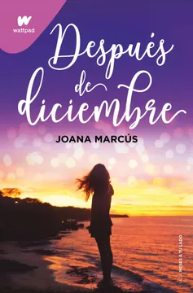
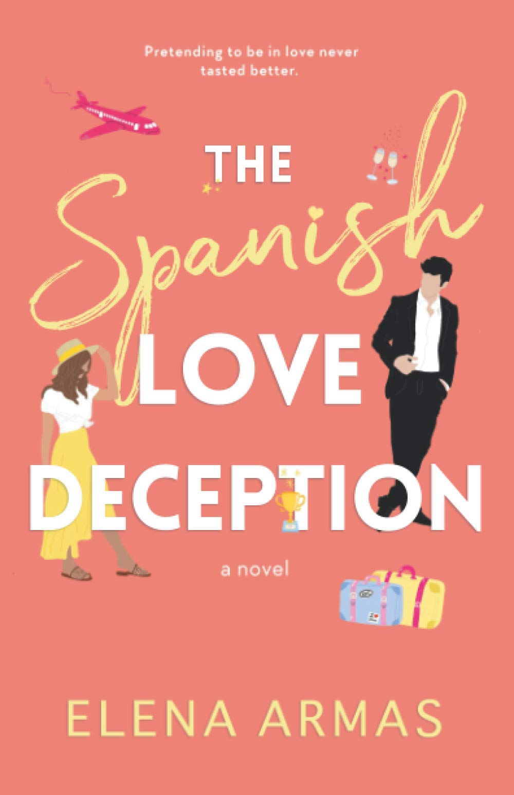
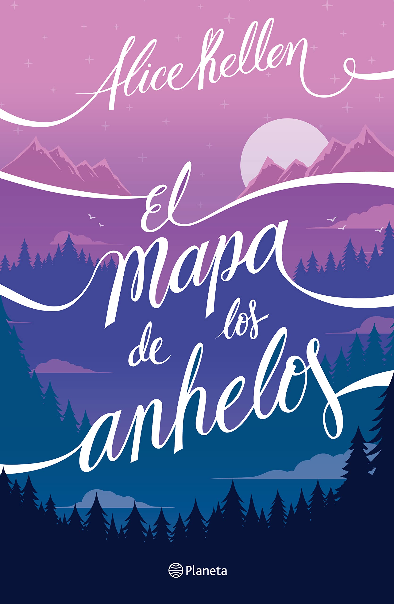
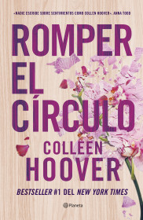
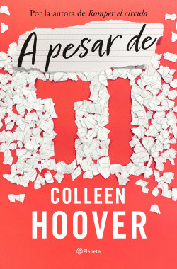

Alice Keller
Bilogía Tú
Romper el círculo
Wattpad
Farsa de amor a la española
Libros populares

Nosotros en la Luna
Alice Kellen
Cuando Rhys y Ginger se conocen en las calles de la ciudad de la luz, no
imaginan que sus vidas se unirán para siempre, a pesar de la distancia y
de que no puedan ser más diferentes. Ella vive en Londres y a veces se
siente tan perdida que se ha olvidado hasta de sus propios sueños. Él es
incapaz de quedarse quieto en ningún lugar y cree saber quién es. Y cada
noche su amistad crece entre emails llenos de confidencias, dudas e
inquietudes. Pero ¿qué ocurre cuando el paso del tiempo pone a prueba su
relación? ¿Es posible colgarse de la luna junto a otra persona sin poner
en riesgo el corazón?

Después de Diciembre
Joana Marcus
El tiempo es algo relativo. Para algunos pasa más rápido; para otros, no tanto. A Jenna
Brown el último año se le ha hecho eterno. Cuando superas una ruptura, el tiempo se rige
por otras leyes físicas, y estar un año sin Jack Ross ha sido uno de los retos más
difíciles de su vida. Pero ha conseguido superarlo, centrarse en si misma y convertirse
en una Jenna renovada que tiene un nuevo objetivo vital: terminar los estudios. Jenna
está
convencida de que todo lo ocurrido antes de diciembre forma parte del pasado, pero ¿que
ocurrirá despues de diciembre?

Farsa de amor
Elena Armas
Catalina está desesperada, cuatro semanas no son demasiado para que encuentre a alguien
dispuesto a acompañarla a la boda de su hermana al otro lado del Atlántico, y menos aún
que finja que la ama. Pero lo más ridículo de todo es que sea Aaron Blackford, su
compañero de trabajo al que no soporta, quien se ofrezca a hacerlo. Ahora Lina deberá
sopesar qué es peor: aguantar a Aaron, con su aire petulante y sus ojos de hielo, o
admitirle a su familia que ha mentido y que es toda una farsa.

El mapa de los anhelos
Alice Kellen
¿Y si te diesen un mapa para descubrir quién eres?
¿Seguirías la ruta hasta el final? Imagina que estás
destinada a salvar a tu hermana, pero al final ella muere y
la razón de tu existencia se desvanece. Eso es lo que le
ocurre a Grace Peterson, la chica que
colecciona palabras y ve pasar los días refugiada en la
monotonía. Hasta que llega a sus manos el juego de El mapa
de los anhelos y lo primero
que debe hacer es encontrar a alguien llamado Will Tucker,
del que nunca ha oído hablar y que está a punto de
embarcarse con ella en un viaje directo al corazón.

Romper el círculo
Collen Hoover
A veces quién más te quiere. Es quien más daño te hace.
Lily no siempre ha tenido una vida fácil, pero eso nunca
le ha impedido luchar por lo que quiere. Su vida
comienza a cambiar el día que Ryle Kincaid, un
extraordinario neurocirujano, se fija en ella. Todo en él es
perfecto, salvo su completa aversión a las relaciones,
así que cuando Lily se da cuenta, no puede
evitar preguntarse por qué ha tomado esa decisión. Cuando
Atlas reaparece, su primer amor y un vínculo con el pasado que
dejó atrás, y Ryle comienza a mostrar
su verdadera cara, todo lo que Lily ha construido con él
se ve amenazado.
Aplicaciones de Lectura

Kindle
2007
Kindle es un lector de libros electrónicos portátil que permite comprar,
almacenar y leer libros digitalizados, creado por la tienda virtual de Amazon.com o bien
libros y documentos propiedad del usuario mientras estos estén en un formato de lectura.

Wattpad
2006
Wattpad es una plataforma online de lectura y escritura. En ella los creadores pueden
publicar novelas, relatos, artículos, poemas, blogs, fanfics, y muchos otros géneros
literarios que los usuarios pueden leer de forma gratuita.
Booknet
2017
Es una plataforma literaria de autopublicación global, en la cual los autores
publican sus libros de forma gratuita o los venden. Los escritores monetizan incluso
aquellos libros que acaban de empezar a escribir.

Google Books
2010
Google Play Books es como una aplicación en forma de tienda, al más puro estilo
Google Play Store que permite descargar libros electrónicos, también conocidos
como ebooks. Últimamente también se han añadido audiolibros.
FBReader
2006
FBReader es un lector de libros electrónicos libre y open source. Cuenta con una
interfaz completamente personalizable, permitiendo elegir de una manera sencilla el
color del texto, el tipo de letra y las animaciones utilizadas a cambiar de página.
Apps Destaque

WhatsApp es una aplicación multiplataforma de
mensajería instantánea y llamadas de voz para
teléfonos inteligentes. Además de la mensajería de
texto, los usuarios pueden enviar imágenes, videos y
documentos PDF, así como realizar llamadas gratuitas
a través de una conexión a Internet.

Skype
Skype es un software que permite la comunicación a
través de Internet a través de conexiones de voz y
video, creado por Janus Friis y Niklas Zennstrom. Skype
se lanzó en 2003. En 2005 se vendió a eBay y es
propiedad de Microsoft desde mayo de 2011.

Slack
Slack es un conjunto basado en la nube de herramientas y
servicios de colaboración en equipo patentados, fundado
por Stewart Butterfield. Slack comenzó como una
herramienta interna utilizada por su empresa, Tiny
Speck, en el desarrollo de Glitch, un juego en línea
ahora desaparecido.

Trello
Trello es una aplicación de gestión de proyectos basada
en web creada originalmente por Fog Creek Software en
2011. En 2014 se convirtió en una empresa. Opera un
modelo de negocio Freemium, en el que la versión
gratuita o de pago se pone a disposición del usuario.

Telegram
Telegram es un servicio de mensajería instantánea basado
en la nube. Telegram está disponible para teléfonos
inteligentes o tabletas, computadoras y también como
aplicación web. Los usuarios pueden enviar mensajes e
intercambiar fotos, videos, pegatinas y archivos de
cualquier tipo.
Novedades

A pesar de ti
Collen Hoover
A Morgan y su hija de dieciséis años, Clara, nada les
gustaría más que no parecerse. Morgan está decidida a
evitar que su hija cometa los mismos errores que ella. Con
personalidades muy distintas les resulta cada vez más
difícil coexistir. La única persona que puede traer paz
al hogar es Chris, marido, padre y el ancla de la
familia. Pero esa paz se rompe cuando se ve envuelto en
un trágico y extraño accidente con desgarradoras
consecuencias para ellas. Con cada nuevo
secreto y malentendido madre e hija se separan cada vez
más, así que lo último que imaginan es que para volver a
enamorarse se necesitan la una a la otra.
Todo lo que somos juntos
Alice Kellen
¿Qué pasará con Axel y Leah? Han pasado tres años
desde la última vez que se vieron. Ahora, Leah está
a punto de cumplir su sueño de exponer en una
galería.Y, pese al pasado, Axel necesita formar
parte de un momento como ese.Cuando sus caminos
vuelven a cruzarse, Leah tiene que tomar decisiones
que pueden cambiarlo todo, porque, a pesar de lo que
ocurrió, los recuerdos de toda su vida siguen ahí;
intactos, bonitos, únicos. Colándose en cada grieta
que aún no ha cerrado.Porque él sigue siendo el
chico que aún no ha olvidado. Porque a
veces basta un deja que ocurra para tenerlo todo.
Nosotros en la Luna
Alice Kellen
Cuando Rhys y Ginger se conocen en las calles de la ciudad de la luz, no
imaginan que sus vidas se unirán para siempre, a pesar de la distancia y
de que no puedan ser más diferentes. Ella vive en Londres y a veces se
siente tan perdida que se ha olvidado hasta de sus propios sueños. Él es
incapaz de quedarse quieto en ningún lugar y cree saber quién es. Y cada
noche su amistad crece entre emails llenos de confidencias, dudas e
inquietudes. Pero ¿qué ocurre cuando el paso del tiempo pone a prueba su
relación? ¿Es posible colgarse de la luna junto a otra persona sin poner
en riesgo el corazón?

Todo lo que nunca fuimos
Alice Kellen
Leah está rota. Leah ya no pinta. Leah es un
espejismo desde el accidente que se llevó a
sus padres.Axel es el mejor amigo de su
hermano mayor y, cuando acepta recibirla en
su casa durante unos meses, quiere ayudarla
a encontrar y unir los pedazos de la chica
llena de color que un día fue. Pero no sabe
que ella siempre ha estado enamorada de él,
a pesar de que sean casi familia, ni que
toda su vida está a punto de cambiar.Porque
ella está prohibida, pero le despierta la
piel.Porque es el mar, noches estrelladas y
vinilos de los Beatles.Porque a veces basta
un deja que ocurra para tenerlo todo.
El mapa de los anhelos
Alice Kellen
¿Y si te diesen un mapa para descubrir quién eres?
¿Seguirías la ruta hasta el final? Imagina que estás
destinada a salvar a tu hermana, pero al final ella muere y
la razón de tu existencia se desvanece. Eso es lo que le
ocurre a Grace Peterson, la chica que
colecciona palabras y ve pasar los días refugiada en la
monotonía. Hasta que llega a sus manos el juego de El mapa
de los anhelos y lo primero
que debe hacer es encontrar a alguien llamado Will Tucker,
del que nunca ha oído hablar y que está a punto de
embarcarse con ella en un viaje directo al corazón.